2 - Images as Data
CAS Agentic AI & Deep Learning - Computer Vision (Part1)
Institute for Data Science I4DS, FHNW
Why It Matters
Many classification failures aren’t model failures, they’re data failures.
Imbalance, noisy labels, hidden shortcuts, leakage, wrong tensor assumptions.
One Class, Many Appearances
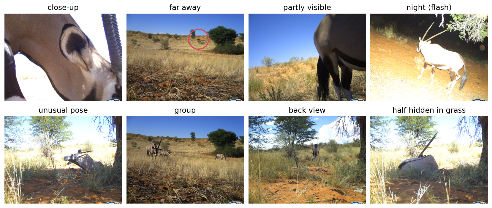
Figure 1: Eight Snapshot Kgalagadi images, all labelled gemsbok: close-up, far away (circled), partly visible, night (flash), unusual pose, group, back view, and half hidden in grass.
Image Representations
Images as Tensors (1/2)
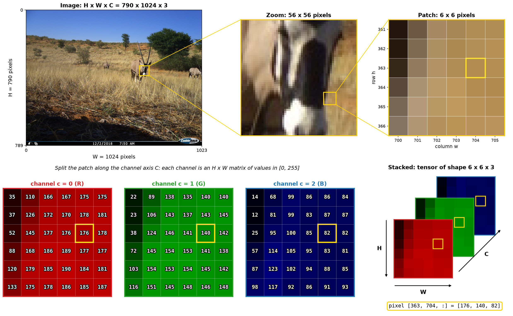
Figure 2: An image as a tensor of shape H × W × C.
Images as Tensors (2/2)
Figure 3: An image as a tensor of shape H × W × C.
Pixel values: uint8 [0, 255] → float [0, 1] → standardized (zero mean, unit variance)
Shape conventions:
- NumPy / PIL:
(H, W, C)— channels last - PyTorch:
(C, H, W)— channels first
Mismatched conventions → silent bugs.
Channels: What Does C Mean?
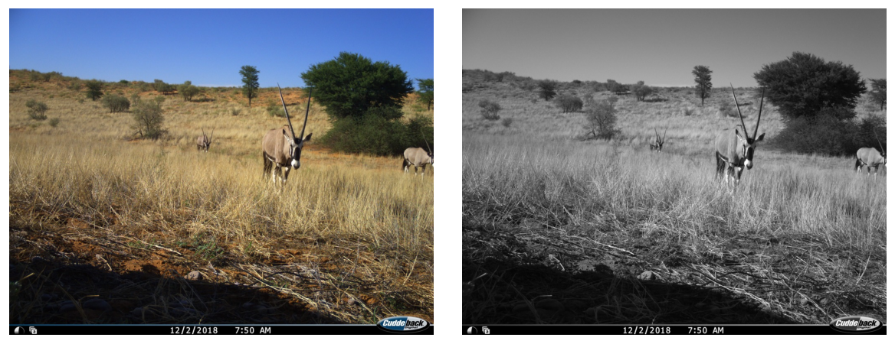
Figure 4: RGB (3 channels) vs. grayscale (1 channel).
- 1: grayscale, depth, IR/thermal, X-ray, ultrasound
- 3: RGB (or HSV, same info, different axes)
- 4: RGBA (alpha) or RGB + near-IR
- N (10s–100s): multispectral / hyperspectral (remote sensing, agriculture, astronomy)
For ordinary 2-D images, only C changes; the tensor structure stays H × W × C. For volumes or time series, we add additional axes.
Thermal Imaging
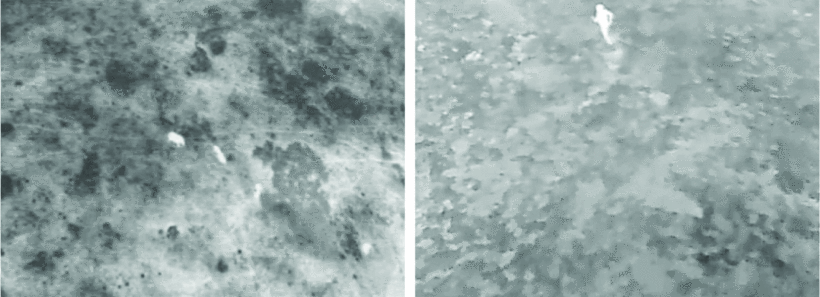
Figure 5: Thermal images are often single-channel sensor measurements: each pixel represents heat / infrared intensity. For display, they may be mapped to false-color RGB.
Quiz: Batch Shape
A batch of 32 RGB images, each 224 × 224, in PyTorch.
What is the tensor shape?
Answer: (32, 3, 224, 224) — batch × channels × height × width
The batch dimension is always first in PyTorch; it enables parallel GPU computation.
Resolution
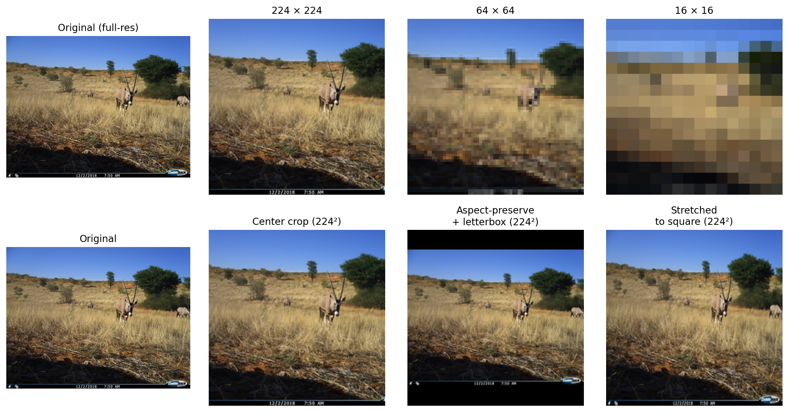
Figure 6: Same image at 224 × 224, 64 × 64, 16 × 16. Detail is progressively lost.
- Higher → detail, more memory + compute
- Lower → faster, but discards information
- Aspect-ratio distortion → squashing deforms objects
Common: resize shortest edge + center-crop, or resize with padding.
Quiz: MRI as a Tensor
How would an MRI scan be represented?
Is it still H × W × C?
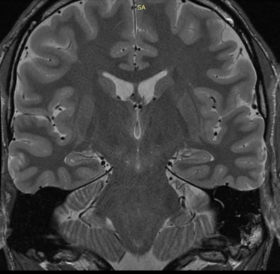
Figure 7: Source
MRI as a Tensor
How would an MRI scan be represented?
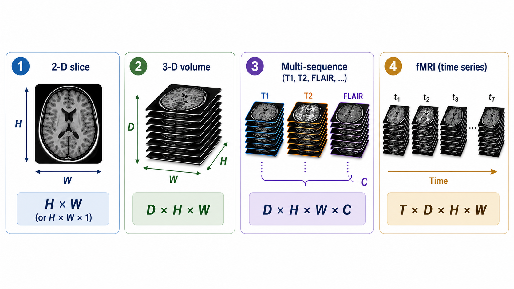
Figure 8: MRI scans.
The H × W × C abstraction generalizes: sequences and depth become extra axes.
Image Datasets
Real-World Camera Trap Dataset
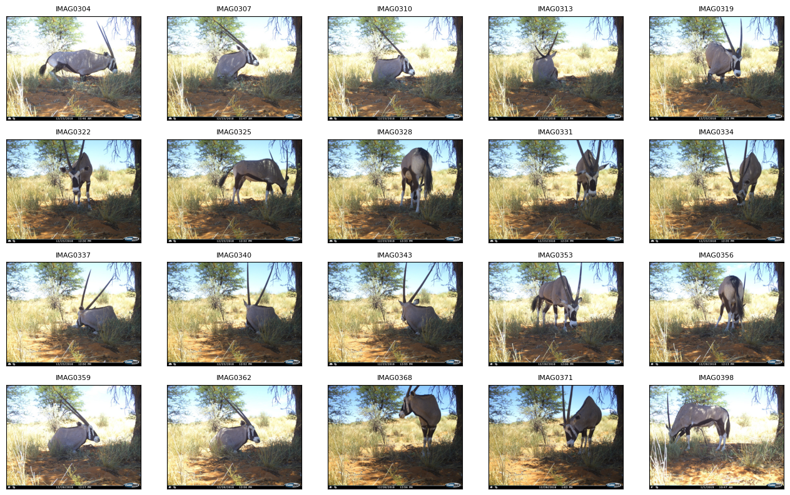
Figure 9: Source: Snapshot Kgalgadi
Question: What could be the challenge for classification, looking at these examples?
Class Imbalance
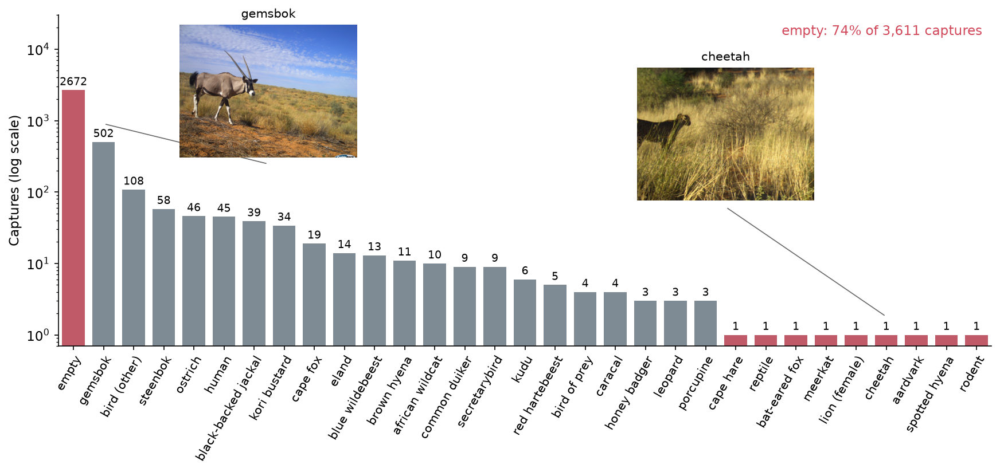
Figure 10: Captures per class in the Kalahari dataset (log scale).
74% of captures are empty; many species appear only once.
Label Noise
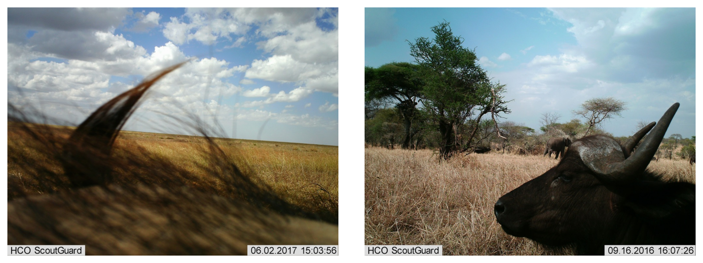
Figure 11: Wolf or large dog? Empty, or a tail at the edge of the frame?
- Inter-annotator disagreement on borderline cases
- Systematic errors: annotators consistently confuse two classes
- Ambiguous category boundaries: class definitions overlap
Deep networks can eventually memorize noisy labels (Arpit et al. 2017), so validation monitoring and data inspection matter.
Hidden Bias
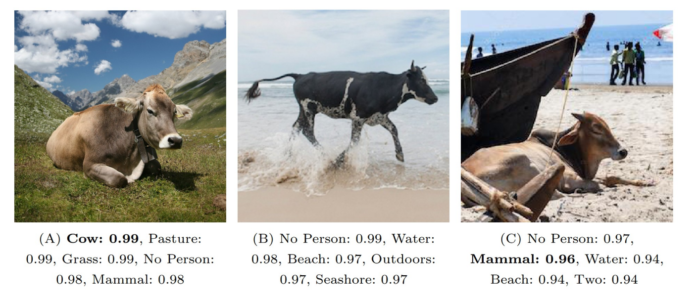
Figure 12: Same animal, different background: different prediction. The background, not the cow, drives the prediction. Adapted from Beery et al. (2018).
- Geographic: limited regional diversity (architecture, vegetation, clothing)
- Selection: internet-sourced images overrepresent certain demographics/styles
- Watermark / source artifacts: visual quirks correlate with labels
Dataset Splits
- Train: used to fit model parameters
- Validation: used for model selection and tuning
- Test: used once for final evaluation
Splitting strategy must match the data-generating process.
- Random: not always appropriate
- Stratified: preserve class distribution across splits
- Grouped: keep related images (same event, patient, location) in the same split
Splitting a Dataset

Figure 13: Source: Voxel51
Question: What is wrong with this split?
Data Leakage
The model sees information during training that it will not have at deployment.
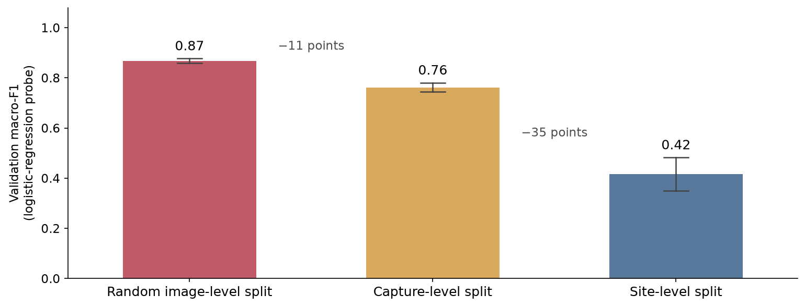
Figure 14: Same images and model, different splits: the score drops as the split gets stricter.
Causes: near-duplicates, same site in train and test, statistics computed on all data.
Quiz: Skin Cancer Detection Dataset
500 patients, multiple visits each. Images randomly shuffled and split 80/10/10.
What goes wrong?
The same patient can appear in both train and test. The model may learn patient-specific cues instead of lesion-specific cues.
Fix: split at the patient level.